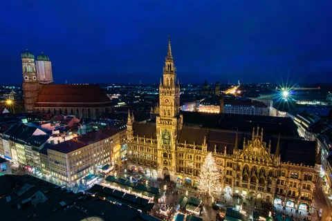
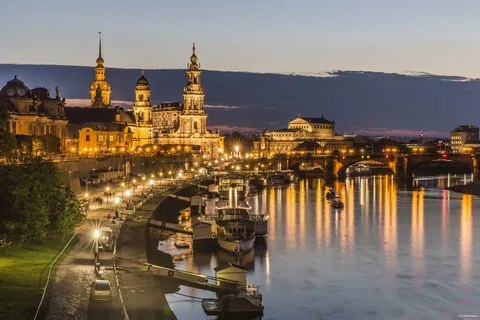

Берлин - столица Германии, известный своей богатой историей и культурой. Я посетил множество достопримечательностей, таких как Бранденбургские ворота, Рейхстаг и Берлинскую стену.
Дополнительная информация о достопримечательностях Берлина:
Бранденбургские ворота - символ объединения Германии.
Рейхстаг - здание парламента Германии с куполом, спроектированным Норманом Фостером.
Берлинская стена - памятник холодной войны, разделявший Восточный и Западный Берлин.
Мюнхен

Мюнхен - третий по величине город Германии, знаменитый своей архитектурой, пивными садами и ежегодним фестивалем Октоберфест.
Дополнительная информация о Мюнхене:
Марienplatz - центральная площадь города, где находится знаменитая Новая ратуша.
Храм Frauenkirche - знаменитый собор с двумя башнями-близнецами.
Английский сад - один из крупнейших городских парков в мире.
Дрезден

Дрезден - город на реке Эльба, известный своей барочной архитектурой и произведениями искусства.
Дополнительная информация о Дрездене:
Фrauenkirche - знаменитая церковь, разрушенная во время Второй мировой войны и восстановленная в 2005 году.
Зеленые своды - самый большой в мире фарфоровый дворец.
Дрезденский замок - резиденция саксонских королей и курфюрстов.